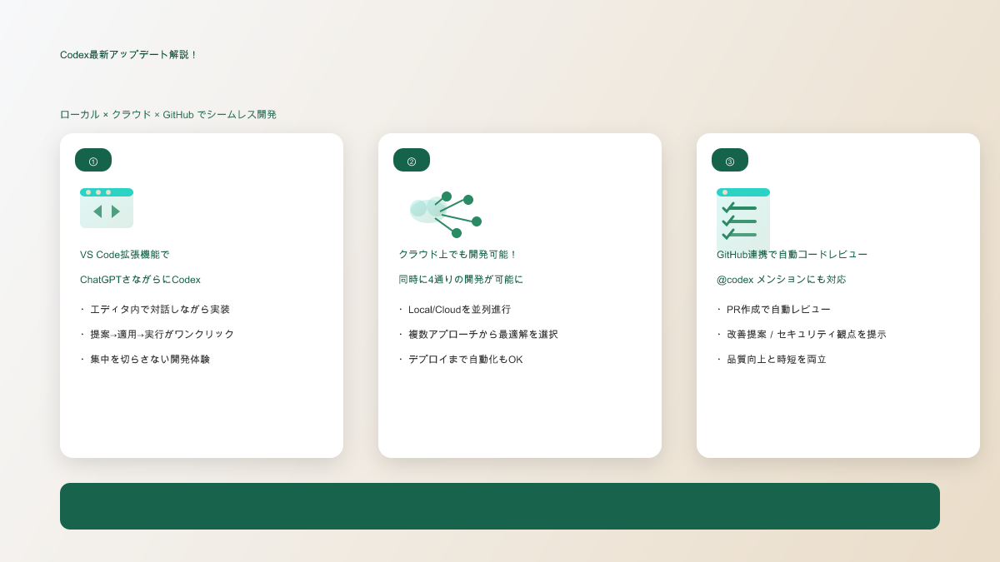

あなたの会社でAI導入を検討中の方へ
AI導入で実際にどれくらいの経済効果が期待できるか、具体的に知りたくありませんか？
私たちは、あなたの会社の規模や業種に応じたAI導入経済効果シミュレーターを提供しています。従業員数、現在の業務時間、導入予定のAIツールを入力するだけで、年間でどれくらいのコスト削減と生産性向上が期待できるかを具体的に算出できます。
🔗 AI経済効果シミュレーターはこちら：
さらに、AI導入を成功させるために助成金で75％費用が戻ってくる研修を、あなたの会社のニーズに完全カスタマイズして開催することができます。業種特有の課題に合わせた実践的な内容で、従業員の皆様が確実にAIを活用できるようになります。
🔗 カスタマイズ研修の詳細はこちら：
AI時代の波に乗り遅れる前に、まずは経済効果を確認してみませんか？
#AI #Codex #GPT5 #OpenAI #AIコーディング #開発効率化 #生成AI #IT業界 #ソフトウェア開発 #デベロッパー #GitHub #VSCode #エディタ拡張 #クラウド連携 #バイブコーディング #生産性向上 #未来の働き方 #テクノロジー #最新技術 #DX #企業DX #業務効率化 #技術革新 #コードレビュー #自動化 #AIエージェント #新機能 #プログラミング #デジタル変革
初心者が「すごい！」と感じる3つの瞬間

① VS Code拡張で「独りじゃない開発」に変わる
エディタの画面の中に、頼れる相棒が座ってくれる感覚です。わからないところにカーソルを置いて「ここ、もっと速くしたい」と声をかけるだけで、Codexがその場で直し方を考え、必要な差分を見せてくれます。別ウィンドウで検索して迷子になる時間はもう終わり。エラーが出たら、そのログを見せるだけで「原因はここ、こう直そう」とすぐ返ってくる。初めての人ほど、コピペや設定の迷路から解放されて、「作れた！」という小さな成功体験が何度も積み上がっていきます。手を止めず、気持ちを折らず、前に進める。そんな優しい開発体験です。
② クラウドが同時に4つのアイデアを走らせてくれる
ひとつの正解を探して悩む時間が、ワクワクに置き換わります。あなたはいつも通り手元で作業を続けながら、クラウドのCodexに「別のやり方も試して」と頼むだけ。重たいセットアップや検証はクラウド側が頑張ってくれて、少し経つと「味の違う4つの試作」がデモURLや計測付きで戻ってきます。まるで試食会でお気に入りを選ぶように、「これが好き」を選ぶだけで先に進める。実験のたびに作業が中断されないから、集中もモチベーションも途切れません。
③ GitHubに「先回りの赤ペン先生」がいる安心感
プルリクエストを出した瞬間、賢い先輩が先に目を通して「ここは危ないかも」「こう直したほうがもっと良くなる」とやさしく道筋を示してくれます。怖かったレビューが、上達のきっかけに変わる瞬間です。もし特に不安な変更なら、コメントで「@codex ここ見て」と呼びかければ、意図をくみ取ったうえで具体的な修正案やテストの足し方まで提案してくれる。人に見せる前に粗を整えられるから、自信を持って「お願いします」と言える。レビューのハードルが下がり、チームの空気がふっと軽くなります。
5分ハンズオン：思いつきが「動く」に変わるまで
VS Codeを開き、直したいファイルを開いたら、まずは気軽に話しかけてみてください。「この関数、もう少し速くなる？」——するとCodexが具体的な変更案を提示します。提案は差分として見えるので、怖ければ一部だけ採用でもOK。テストやコマンドの実行もエディタからそのまま。失敗しても大丈夫、ログをペーストすれば「じゃあ次はこうしよう」と別案が返ってきます。たった数分でも「自分の手で前に進んだ」手応えが残るはずです。
小さな成功体験の積み上げ方
いきなり大きな機能を任せる必要はありません。まずは1ファイル、1関数、1つのエラーから。今日1回の「直った！」が、明日の「作れた！」に繋がります。Codexはあなたの速度に合わせてくれます。急がなくていい。ただ、止まらないこと。それが一番の近道です。
導入ロードマップ：今日 → 今週 → 今月
今日のゴールは「話しかけて、ひとつ直す」。今週は「クラウドにひとつ任せて、比較して選ぶ」。今月は「GitHubレビューを自動化して、チームでの開発を軽くする」。段階を踏むほど、摩擦は減り、つくることに使える時間が増えていきます。
よくあるつまずきと、やさしい回避策
ログインで止まったら深呼吸。ターミナルに表示されたリンクをそのまま開いて認証するだけで大抵は解決します。権限のエラーが出たら、対象のリポジトリにアクセス権があるかを確認。どうしても進まないときは、エラーメッセージをそのままCodexに貼って「いっしょに直して」と頼んでみてください。あなたを置いていくことは、ありません。
おわりに：熱が冷めないうちに
作る、試す、直す。この当たり前の流れが、驚くほどなめらかな一本の体験になります。思いついた熱が冷めないうちに形にできる——その小さな積み重ねが、「自分でもできる！」という確かな手応えに変わっていきます。次にエディタを開いたら、まずはひとこと話しかけてみてください。今日のあなたの5分が、未来の当たり前を変えていきます。